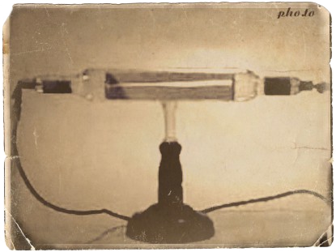
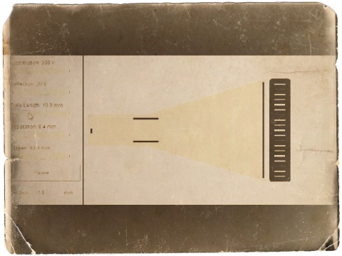
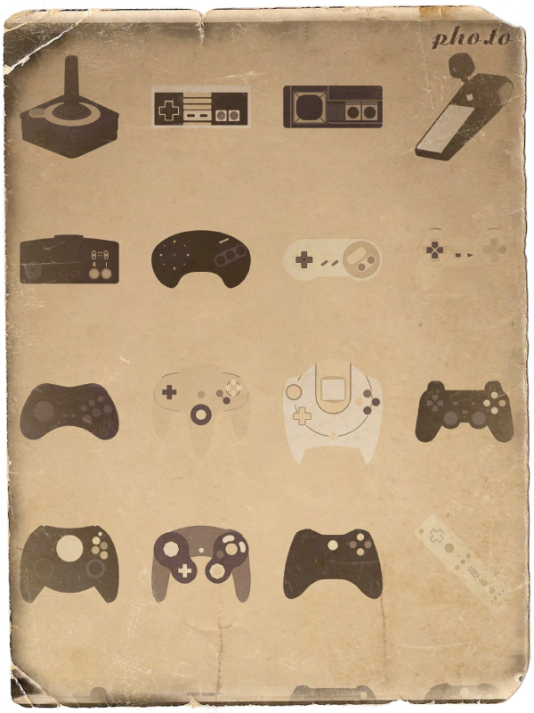

History
The cathode-ray tube amusement device was invented by physicists Thomas T. Goldsmith Jr. and Estle Ray Mann. The pair worked at television designer DuMont Laboratories in Passaic, New Jersey specializing in the development of cathode ray tubes that used electronic signal outputs to project a signal onto television screens. Goldsmith, who had received a Ph.D. in physics from Cornell University in 1936 with a focus on oscilloscope design, was at the time of the device's invention the director of research for DuMont Laboratories. The two inventors were inspired by the radar displays used in World War II, which Goldsmith had worked on during the war. The patent for the device was filed on January 25, 1947 and issued on December 14, 1948. The patent, the first for an electronic game due to no other electronic game being made before the CRT Amusement device,was never used by either the inventors or DuMont Laboratories, and the device was never manufactured beyond the original handmade prototype. Institute of Electrical and Electronics Engineers historian Alex Magoun has speculated that Goldsmith did not make the prototype with the intent for it to be the basis of any future production, but only designed the device as a demonstration of the kind of commercial opportunities DuMont could pursue. Video game historian Alexander Smith has also speculated that DuMont's ongoing financial issues prevented any investment into a new product. Goldsmith did not work on games after the invention of the device; he was promoted to vice president in 1953 and left DuMont—by then split up and sold to other firms—to become a professor of physics at Furman University in 1966. Goldsmith kept the device and brought it with him to Furman; in a 2016 interview fellow physics professor Bill Brantley recalled Goldsmith demonstrating the game to him.

Gameplay
The cathode-ray tube amusement device is made of a cathode-ray tube (CRT) connected to basic oscilloscope type circuitry with a set of knobs and switches. The device also incorporates very simple analog circuitry and doesn't use any digital computer or memory device or execute a program. The CRT projects a spot on the display screen, which traces a curved arc across the screen when a switch is activated by the player. This beam spot represents the trajectory of an artillery shell. The curved path is produced by the CRT, which isn’t of conventional design, deflecting the beam of electrons as the spot moves across the screen. Overlaid on the screen are transparent plastic targets representing objects such as airplanes which can be seen as early enemies. At the end of the spot's trajectory, the beam defocuses, resulting in the spot expanding and blurring. This represents the shell exploding as if detonated by a time fuze. The goal of the game is to have the beam defocus when it is within the bounds of a target. Prior to the beam spot beginning its arc, the player can turn the control knobs to direct the beam spot's trajectory and adjust the delay of the shell burst. The machine can be set to fire a "shell" either once or at a regular interval, which is adjustable by the player. This gives the player the goal of hitting one of the overlay targets with the shell burst within a time limit. The player was recommended to make the trajectory far removed from a straight line "so as to require an increased amount of skill and care". It basically is like trying to fire and detonate bombs onto enimies

Legacy
Despite being a game that used a graphical display, the cathode-ray tube amusement device is generally not considered under many definitions to be a candidate for the first video game, as it used purely analog hardware and did not run on a computing device; some loose definitions may still consider it a video game, but it is still usually disqualified as the device was never manufactured (though it can be seen as the grandfather of video games since it shows that an idea of early video games was in the mind of people ever since the late 1940s). Nevertheless, it is the earliest known interactive electronic game to incorporate an electronic display, as no prior games, such as the 1936 Seeburg Ray-O-Lite, had such a display or primarily used electronic components—ones which modify an electrical signal, rather than simply using electricity as power. This makes the cathode-ray tube amusement device a forerunner to other games in the early history of video games. As the device was never manufactured or widely shown it did not directly inspire any other games and had no impact on the future video game industry.The patent itself was not discovered again until 2002, when David Winter, a French electronics collector, while searching for evidence of early prototypes of the 1972 Magnavox Odyssey console found it in a set of documents in an archival warehouse originally compiled for a 1974 lawsuit by Magnavox against several arcade game companies.